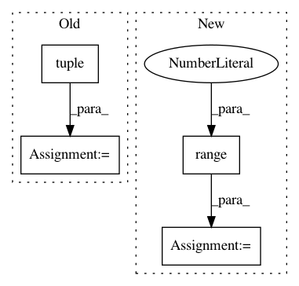

da1d1d8bdc3f85d3eb6e6ba2d6ce13fb52bfa504,testing/test_acquisition.py,TestJointAcquisition,test_multi_aggr,#TestJointAcquisition#,417
Before Change
def test_multi_aggr(self):
models = [self.create_parabola_model(), self.create_parabola_model(), self.create_parabola_model()]
acq1, acq2, acq3 = tuple(map(lambda m: GPflowOpt.acquisition.ExpectedImprovement(m), models))
joint = acq1 + acq2 + acq3
self.assertIsInstance(joint, GPflowOpt.acquisition.AcquisitionSum)
self.assertListEqual(joint.operands.sorted_params, [acq1, acq2, acq3])
After Change
np.testing.assert_allclose(joint.constraint_indices(), np.array([1], dtype=int))
def test_multi_aggr(self):
acq = [GPflowOpt.acquisition.ExpectedImprovement(create_parabola_model(self.domain)) for i in range(4)]
acq1, acq2, acq3, acq4 = acq
joint = acq1 + acq2 + acq3
self.assertIsInstance(joint, GPflowOpt.acquisition.AcquisitionSum)
In pattern: SUPERPATTERN
Frequency: 3
Non-data size: 4
Instances
Project Name: GPflow/GPflowOpt
Commit Name: da1d1d8bdc3f85d3eb6e6ba2d6ce13fb52bfa504
Time: 2017-08-12
Author: joachim.vanderherten@ugent.be
File Name: testing/test_acquisition.py
Class Name: TestJointAcquisition
Method Name: test_multi_aggr
Project Name: DistrictDataLabs/yellowbrick
Commit Name: ca14cf72e3e4bd3a6136cafad8701ac41f48f09b
Time: 2018-08-25
Author: davidwaterman@gmail.com
File Name: yellowbrick/cluster/elbow.py
Class Name: KElbowVisualizer
Method Name: __init__
Project Name: modAL-python/modAL
Commit Name: 9bf5f79f13ebd9f86111e75b872d692b92eec5b9
Time: 2018-09-18
Author: theodore.danka@gmail.com
File Name: tests/core_tests.py
Class Name: TestUtils
Method Name: test_linear_combination